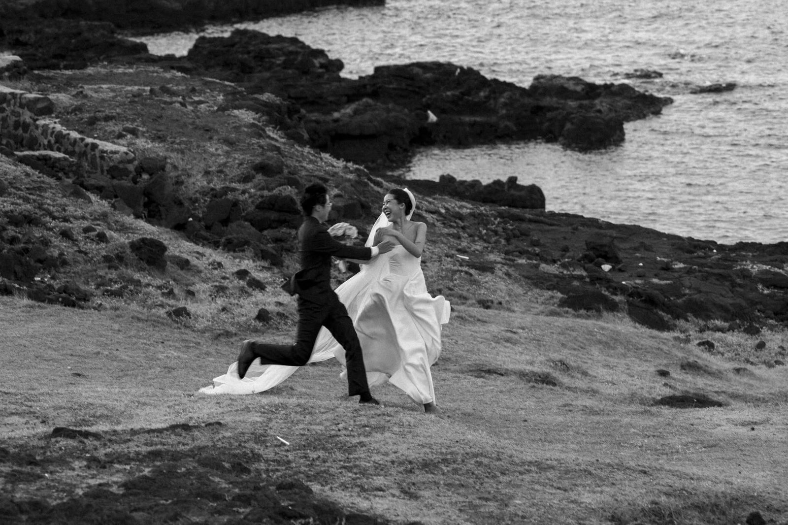
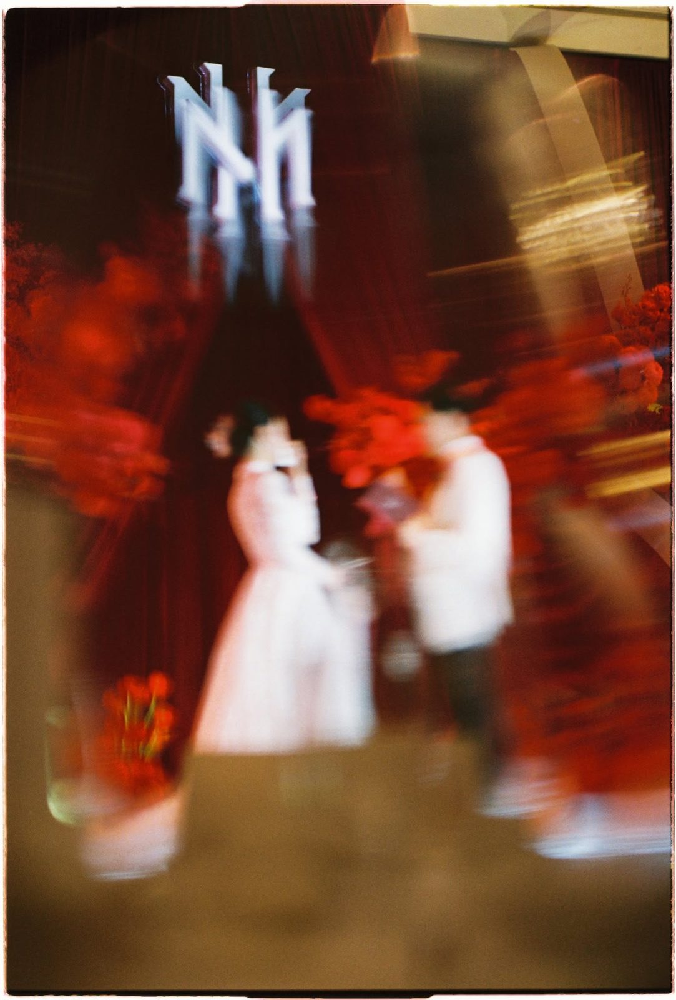

Chân thật HONEST
Chúng tôi quan sát nhiều hơn sắp đặt. Khoảnh khắc đẹp nhất thường đến khi không ai để ý tới máy ảnh.
(Về chúng tôi)

(Chuyện cái tên)
Emotion là những điều không dàn dựng được: một cái nắm tay siết chặt hơn, giọt nước mắt lúc bố dắt con gái vào lễ đường, tiếng cười khi pháo giấy rơi.
Motion là cách chúng tôi giữ chúng lại, như những thước phim: có nhịp, có ánh sáng và có cả những khoảng lặng.
Let's cry long, laugh loudly, kiss deeply, and always be happy. Welcome our Lovers!
[Năm thành lập, nơi bắt đầu và người sáng lập]
(Cách chúng tôi làm)
Chúng tôi quan sát nhiều hơn sắp đặt. Khoảnh khắc đẹp nhất thường đến khi không ai để ý tới máy ảnh.
Chờ đúng ánh sáng, chọn đúng khung hình, để mỗi tấm ảnh như một cảnh trong phim của hai bạn.

Gió, voan, khói, pháo giấy. Chúng tôi giữ lại cả chuyển động, không chỉ dáng đứng.
(Ekip)
[Vai trò]
[Vai trò]
[Vai trò]
(Nơi chúng tôi đã đến)
Phú Quý · Huế · và nơi chỉ hai bạn biết
[Thêm các tỉnh thành đã chụp] · [Báo chí, giải thưởng hoặc đối tác, nếu có]